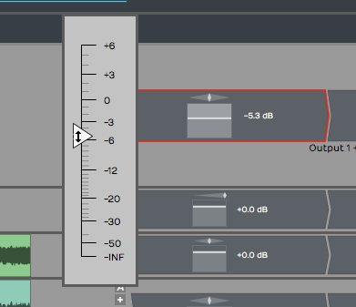
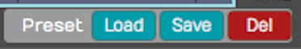

Built-in Effects Plugins¶
Waveform's built-in effects are plugins you combine into effects chains in the mixer or inside plugin racks.
Waveform Effects¶
Drag the plugin object to the mixer to open the plugin picker, then choose Waveform > Effects. You'll see the list of built-in effects. The Waveform folder also has Instruments and Utility subfolders.

Built-in Plugin Effects in Waveform
This chapter covers the Volume & Pan and Level Meter plugins, the equalisers, reverbs, Delay, Chorus, Phaser, the dynamics plugins, Distortion, Pitch Shifter, DJ EQ and DJ Filter, the DJ Tools, the Text plugin, Guitar IR, the Artisan Collection and Master Mix. The MIDI effects and the utility plugins have chapters of their own: see MIDI Effects and Utility Plugins.
📝 Note: The older versions of several effects are in a Legacy folder, which is hidden until you turn it on: go to Settings > Plugins, click Enable internal plugins and choose Enable Legacy Plugins, then restart Waveform. See Legacy Plugins.
📝 Note: Delay, Chorus, Phaser, Distortion, DJ Filter and the three reverbs have a Mix Lock button on their Mix control. Turn it on to keep your Mix setting when you load a preset, so you can try presets on a send or an insert without the wet/dry balance jumping about. (Default: off)
Volume & Pan Plugin¶
Every new track has a Volume & Pan plugin at the right of the inline mixer, with the level and pan controls you'd find on any mixer channel. Because the Waveform mixer is made of plugins, you can move Volume & Pan in front of other plugins or delete it. You can also add a second Volume & Pan and use it as a trim control for gain staging.
Adjusting Volume¶
Drag the volume slider up or down. While you drag, a larger slider appears with dB markings for fine adjustment. The Volume value is also shown in the Actions panel.

Volume & Pan Plugin, Adjusting Volume
Adjusting Panning¶
Panning works the same way: click the panner, then drag left or right to set the stereo position.

Volume & Pan Plugin, Adjusting Panning
Resetting Controls¶
To reset Volume or Pan to its default, Opt-click / Alt-click the control.
In the Actions Panel¶
Select a Volume & Pan plugin to show its values and actions in the Actions panel.

Volume & Pan plugin in the Actions panel
The Volume slider is repeated in the Actions panel along with Reset Volume to 0 dB and Mute/Unmute buttons. Pan is repeated there along with a Centre Panning button that resets panning. Below them are Invert Polarity, which flips the polarity of the signal, and, on a track inside a folder, Ignore VCA, which makes the plugin ignore a VCA plugin on the parent folder track.
Pan Law (Choices: (Use Default), Linear, -2.5 dB Center, -3.0 dB Center, -4.5 dB Center, -6.0 dB Center): How the level changes as you pan. (Use Default) follows the Default pan law in Settings > General, which is Linear unless you change it. Many DAWs use a -3 dB pan law, which lowers the level slightly as you pan towards the centre so a track stays in balance as you move it across the stereo field. (Default: Linear)
💡 Tip: To offset the velocity of notes going into a virtual instrument, insert a Volume & Pan plugin before it (to its left) and turn on Apply to MIDI Velocities. The fader then raises or lowers the MIDI velocity, which is a quicker way to make MIDI drums hit harder than editing the notes. It only works with Volume & Pan ahead of the instrument.
Level Meter¶
Every track also has a Level Meter plugin at the right end of the mixer by default. It's a stereo meter showing the left and right levels. To add another one, find it in Waveform > Utility in the plugin picker.

Level Meter Plugin
Select a Level Meter and the Actions panel shows a large horizontal version of the meter, with dB markings.

Large Meter in the Actions panel
A red indicator at the top of the meter shows when the signal has overloaded. Click it to reset the meter.
💡 Tip: To clear all overload indicators in the Edit, right-click any level meter and choose Reset all overload indicators, or press \.
The Level Meter starts in peak mode, like the meters in most DAWs. To change the mode, use the Actions panel or the right-click menu. The modes are:

Meter Modes for the Level Meter Plugin
Peak: Shows the digital peak level. Keep it out of the red to avoid digital clipping.
RMS: Shows the average level, closer to how loud the signal sounds. It behaves like a traditional VU meter, so it's a better guide to how loud one track sounds compared with others.
Sum & difference: Shows both the level and the stereo spread. The left part of the meter shows the sum of left and right, the combined level of the stereo signal.
The right part shows the difference between left and right: the more it shows, the wider the stereo spread. If both channels play exactly the same thing, left minus right cancels to zero and the right part stays still, meaning the signal is mono.
💡 Tip: Turn on Show MIDI activity in the Actions panel and the meter also shows MIDI activity, which helps when you're working out why a virtual instrument isn't playing.

Level Meter, Show MIDI Activity
Equalisers¶
Waveform's equalisers come in three sizes: 1-Band, 3-Band and 8-Band. Each has a frequency-response display in the plugin window where you drag nodes to shape the sound: drag a node up or down for Gain, left or right for Frequency, and around the node to set its Q (width).
1-Band Equaliser is the smallest: a single band you can set to a bell or a shelf, for a single cut or a gentle tone change.

The 1-Band Equaliser
3-Band Equaliser has a low shelf, a sweepable mid bell and a high shelf, the classic three-band tone stack. Set the Frequency and Gain of each band by dragging its node.

The 3-Band Equaliser
8-Band Equaliser is the full parametric EQ. It has eight bands (a low shelf, six peaking bands, and a high shelf), each with its own Frequency, Gain and Q, and each able to be switched on or off individually. It also has a Stereo or Mid/Side mode: in Mid/Side mode you equalise the centre (mono) and the sides (stereo) of the signal separately, which is useful for mastering and stereo-width work.

The 8-Band Equaliser
📝 Note: The older 4-Band Equaliser from earlier versions now lives in the Legacy folder. See Legacy Plugins if you need it to open an old project.
Reverbs¶
Waveform has three algorithmic reverbs, each tuned for a different kind of space: Natural Reverb, Plate Reverb and Non-linear Reverb. They share the same controls, so once you know one you know them all.
- Natural Reverb models real rooms and halls, for natural depth and ambience.
- Plate Reverb recreates the bright, dense sound of a studio plate, a long-standing choice for vocals and snares.
- Non-linear Reverb is a gated reverb whose tail cuts off abruptly rather than fading away, the big drum sound of the 1980s.

The Natural Reverb

The Plate Reverb

The Non-linear Reverb
The controls are:
- Pre Delay: a short gap before the reverb starts, which helps keep the dry signal clear and present.
- Size: the dimensions of the simulated space, from a small room to a large hall.
- Decay: how long the tail takes to fade out.
- Density and Diffusion: the thickness and smoothness of the reverb tail.
- Low Cut / High Cut: filters that trim the bottom and top off the reverb.
- Low Damp / High Damp: how quickly low and high frequencies die away in the tail, for a warmer or brighter sound.
- Slope: (Natural and Plate) tilts the overall tonal balance of the tail.
- Pan: positions the reverb in the stereo field.
- Mix: blends the wet reverb against the dry signal.
💡 Tip: Assign Mix as the quick control parameter so you can bring the reverb in and out while mixing. More reverb pushes a track further back, and less brings it forward; combined with panning, that gives a mix more space.
Delay¶
Delay is a stereo delay with independent left and right channels, and can ping-pong between them. Each side has its own delay time, feedback, cross-feedback, pan and trim, for anything from a simple slapback to wide bouncing stereo echoes.

The Delay
For each channel (L and R):
- Delay: the delay time in milliseconds, or, with Sync on, locked to a musical note value at the project tempo.
- Feedback: how much of the delayed signal is fed back into itself to create repeats.
- Cross FB: cross-feedback, which sends each channel's echoes into the other side. This is what creates the classic ping-pong bounce.
- Pan and Trim: the position and level of that channel's output.
The shared controls are:
- Sync: switches the delay times between free milliseconds and tempo-locked note values.
- Low Cut / High Cut: filters in the feedback path, so the repeats get progressively darker (or brighter) as they fade.
- Mix: the balance of wet delay against the dry signal.
📝 Note: The original simple mono Delay now lives in the Legacy folder.
Chorus¶
Chorus gives the classic shimmering, doubling effect, often used on guitars, pads, electric pianos, bass and vocals. It modulates a short delay so the pitch drifts gently up and down.

The Chorus
- Mode: Normal, Wide, or Wider, setting how far the effect spreads across the stereo field.
- Delay: the base delay time the modulation works around.
- Depth: how far the delay is modulated; more depth means a stronger, more obvious warble.
- Rate: the speed of the modulation, or, with Sync on, a Note value locked to the tempo.
- Sync: switches Rate between free Hz and tempo-locked note values.
- Mix: the blend of dry and chorused signal.
📝 Note: The older Chorus lives in the Legacy folder. The two share a name, but the new one (in the Effects folder) is the default.
Phaser¶
Phaser gives a swirling, sweeping sound, often used on guitars, synths and electric pianos, or any track that needs movement. It sweeps a set of notches up and down through the frequency spectrum.

The Phaser
- Stages: the number of filter stages (4 to 12); more stages give a richer, more pronounced sweep.
- Floor and Ceiling: the lowest and highest frequencies the sweep travels between.
- Rate: the speed of the sweep, or a tempo-locked Note value with Sync on.
- Sync: switches Rate between free Hz and tempo-locked note values.
- Feedback: feeds the output back to intensify the resonant peaks for a more dramatic effect.
- Mix: the blend of dry and phased signal.
📝 Note: The older Phaser lives in the Legacy folder.
💡 Tip: To change the order of effects on a track, drag a plugin left or right. As you drag, a red drop target glows where the plugin will go when you drop it.
Dynamics: Compressor, Gate, and Limiter¶
Waveform's dynamics processing is split into three plugins, one for each job.
Compressor evens out the level of a signal by turning down anything that rises above a threshold.

The Compressor
- Threshold: the level above which compression starts, from -60 to 0 dB. (Default: -30 dB)
- Ratio: how hard the signal is turned down once it crosses the threshold, from 1:1 to 100:1. (Default: 2:1)
- Attack and Release: how quickly the compressor reacts, and then recovers once the signal falls back below the threshold. Attack runs from 1 to 100 ms and Release from 1 to 1000 ms. (Default: 50 ms and 500 ms)
- Knee: softens the transition around the threshold for a gentler, more transparent action, from 0 to 18 dB. (Default: 0 dB)
- Output gain: make-up gain to bring the level back up after compression, from -20 to +20 dB. (Default: 0 dB)
- Sidechain gain: trims the level of an external sidechain, from -20 to +20 dB. (Default: 0 dB) Route another track into the Compressor's sidechain input to make it duck, for example a kick drum pumping a bass line.
Gate does the opposite: it turns the signal down when it falls below the threshold, silencing quiet passages, bleed, or hiss between notes.

The Gate
- Threshold: the level below which the gate closes, from -60 to 0 dB. (Default: -40 dB)
- Attack: how fast the gate opens when the signal returns, from 0.1 to 100 ms. (Default: 1 ms)
- Hold: how long it stays open after the signal drops, from 0 to 1000 ms. (Default: 2 ms)
- Release: how fast it closes again, from 1 to 1000 ms. (Default: 100 ms)
Limiter is a brick-wall limiter that stops the signal from ever going over a set ceiling. Use it on the master bus to catch peaks and raise the overall loudness.

The Limiter
- Gain: drives the signal into the limiter; more gain means more limiting and a louder result. From -20 to +20 dB. (Default: 0 dB)
- Release: how quickly the limiter recovers after catching a peak, from 1 to 300 ms. (Default: 300 ms)
- Ceiling: the absolute maximum output level; nothing passes above it. From -60 to 0 dB. (Default: -0.3 dB)
📝 Note: The classic combined Compressor/Limiter from earlier versions is now in the Legacy folder.
Distortion¶
Distortion adds harmonic grit and saturation, from gentle warmth to full-on fuzz.

The Distortion
- Type: the flavour of distortion (Light, Medium, Hard, Clip, Tube, or Fuzz). (Default: Light)
- Drive: how hard the signal is pushed into the distortion.
- Post Gain: output level, to compensate for the volume change the distortion adds.
- Tone: shapes the brightness of the distorted sound.
- Emphasis: sharpens the character of the distortion by emphasising certain frequencies before the waveshaping.
- Mix: blends the distorted signal with the dry input. (Default: fully wet)
Pitch Shifter¶
Pitch Shifter changes the pitch of the signal in real time.

The Waveform Pitch Shifter Plugin
Semitones: How far to shift the pitch, from -24 to +24 semitones: 12 shifts up an octave and -12 down an octave. Click the value under the knob to type an exact number, or double-click the knob to go back to the original pitch. (Default: 0)
Pitch: Opens a menu of exact shifts, from +2 octaves down to -2 octaves in semitone steps, with Original pitch in the middle.

Pitch Shifter, Set Pitch
Mode (Choices: Elastique (Pro), Elastique (Efficient), Elastique (Mobile), Elastique (Monophonic), Signalsmith (Default), Signalsmith (Cheaper)): The pitch-shifting algorithm used on audio. Elastique (Pro) gives the best quality; the Efficient and Mobile modes and Signalsmith (Cheaper) use less CPU, and Elastique (Monophonic) suits single-note sources such as vocals or bass. (Default: Elastique (Pro))
Settings: Opens the options for the Elastique (Pro) algorithm.
📝 Note: Inserted ahead of a MIDI instrument, Pitch Shifter works on the MIDI instead, transposing the notes by the Semitones value rounded to the nearest semitone.
DJ EQ and DJ Filter¶
DJ EQ and DJ Filter are performance effects for hands-on tone sweeps.
DJ EQ is a three-band EQ with Low, Mid and High faders that boost or fully cut each band. Turn a band all the way down to kill it completely, the way a DJ drops the bass out of a track. Two crossover controls, Freq 1 and Freq 2, set the frequencies where the bands divide.

The DJ EQ
DJ Filter is the classic single-knob DJ filter. The Freq control sits at Off in the centre: turn it left and a low-pass filter sweeps the highs away; turn it right and a high-pass filter sweeps the lows away. Q sets the resonance at the filter's edge, and Mix blends the result with the dry signal.
📝 Note: The simple Low/High-Pass Filter from earlier versions now lives in the Legacy folder. For everyday filtering use the 1-Band Equaliser, or the DJ Filter for sweeps.
DJ Tools PRO¶
📝 Edition: Waveform Pro, or with the DJ Mix Tools Expansion.
The DJ Tools (Fader and Crossfader) turn Waveform's tracks into a DJ-style mixer. The DJ Mix Tools Expansion that includes them also unlocks Stem Separation.
Fader is an automatable volume fader with a Position control and an adjustable response Curve, for riding or programming smooth level changes.

The Fader
Crossfader blends between two stereo sources, A and B. It takes two stereo inputs and produces one stereo output; the Position control fades from full A on the left, through the centre, to full B on the right. Curve shapes the blend, from a smooth equal-power fade to a sharp cut, and Centre Gain sets the level at the midpoint.

The Crossfader
Text Plugin¶
The Text plugin keeps notes with your Edit as you record, edit and mix. Drag Text from Waveform > Utility in the plugin picker to a track, then double-click it to open its window, give it a Name and type a Description.

Text Plugin Example
The description can be as long as you like: how the recording was made, which microphones you used, the artist's name or anything else worth noting. The plugin's Name appears on its thumbnail in the mixer. Text doesn't touch the audio, but it reminds you what you were doing when you come back to a project later.
💡 Tip: You can enable or disable several plugins at once by selecting all of them and pressing F.
Guitar IR PRO¶
📝 Edition: Waveform Pro, or with the Recording Engineer Expansion. This covers both Guitar IR and Dual Guitar IR.
Guitar IR is a convolution plugin. It loads an impulse response (IR), a short WAV recording that captures the sound of a guitar cabinet, speaker or room, and applies that character to whatever passes through it. It pairs with an amp-simulation plugin: run your DI guitar into the amp sim, then into Guitar IR to model the cabinet and microphone.

The Guitar IR
Load a WAV file using the IR field, then shape the result with the controls:
- Gain: output level, from −12 dB to +6 dB.
- Low Cut and High Cut: high-pass and low-pass filters that trim the response, each adjustable from 10 Hz to 20,000 Hz.
- Filter Q: the resonance of the cut filters (0.1 to 14).
- Mix: blends the convolved (wet) signal against the dry input, from 0 to 1.0. It defaults to fully wet (1.0).
- Normalise: evens out the loudness of the loaded IR so swapping impulses doesn't change your level. On by default.
- Trim Silence: removes leading silence from the IR. Off by default.
Dual Guitar IR¶

The Dual Guitar IR
Dual Guitar IR works the same way but hosts two impulse responses (A and B) at once, so you can blend two cabinets or mic positions for a wider, fuller tone. As well as the controls above, it has:
- Width: spreads the two IRs across the stereo field (defaults to 0.5).
- Delay: offsets one IR against the other by up to 200 ms (defaults to 0), useful for subtle thickening or comb-filter effects.
Artisan Collection PRO¶
📝 Edition: Waveform Pro.
The Artisan Collection is a built-in library of over 180 effects based on the AirWindows plugins by Chris Johnson. They're grouped into categories in the plugin picker: Delay, Dither, Distortion, Dynamics, Emulation, EQ, Filter, Imaging, Modulation, Reverb, and Utility.
Every Artisan Collection effect has a Dry level and a Wet level alongside its own parameters, so you can always set how much of the processed signal is blended with the original.
To use them, go to Settings > Plugins, click Enable internal plugins and make sure Enable Artisan Collection Plugins is ticked (it's on by default). After changing it, restart Waveform. Once enabled, the effects appear under the Artisan Collection folder in the plugin picker.
Master Mix PRO¶
📝 Edition: Waveform Pro and Waveform OEM.
Master Mix is a mastering plugin that sits at the end of your signal chain, usually on the master or output bus, to polish a finished mix. Add it from Waveform > Effects in the plugin picker, then double-click it to open its window. It combines several mastering stages:
- Two parametric equalisers, one before and one after the dynamics processing, for corrective and final tonal shaping. The Pre and Post buttons switch each one in or out.
- Three-band crossover compression: the signal is split into low, mid and high bands (BAND 1, BAND 2, BAND 3), each feeding its own compressor with a transfer curve you edit by dragging nodes.
- A final DYNAMICS stage with soft clipping (Softclip) and a noise gate (Gating).
- Separate left and right INPUT and OUTPUT levels, each with metering.
- A DC filter, switched on with the DC button, that removes any DC offset from the signal.

The Master Mix window
The PRESET box recalls Master Mix's factory presets.
Saving Presets¶
Most of the built-in plugins can load, save and delete presets. Your saved presets are in the Search tab of the Browser: choose Presets in the category list to show only presets (see Categories).

Load, Save, or Delete Presets
When you save a preset you can also give it tags, such as Vocal EQ, Guitar Focus or Bass Boost, to make it quicker to find later.
Moving On¶
Legacy Plugins covers the older versions of these effects that now live in the Legacy folder.